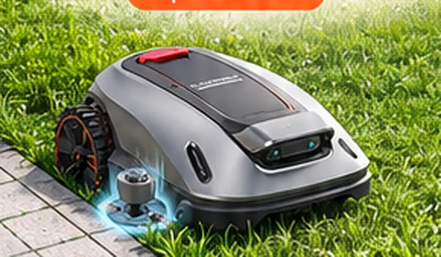
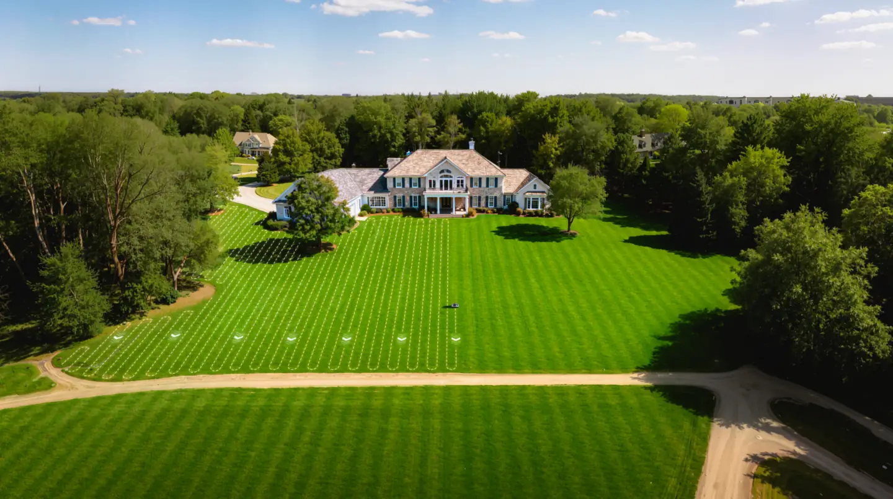
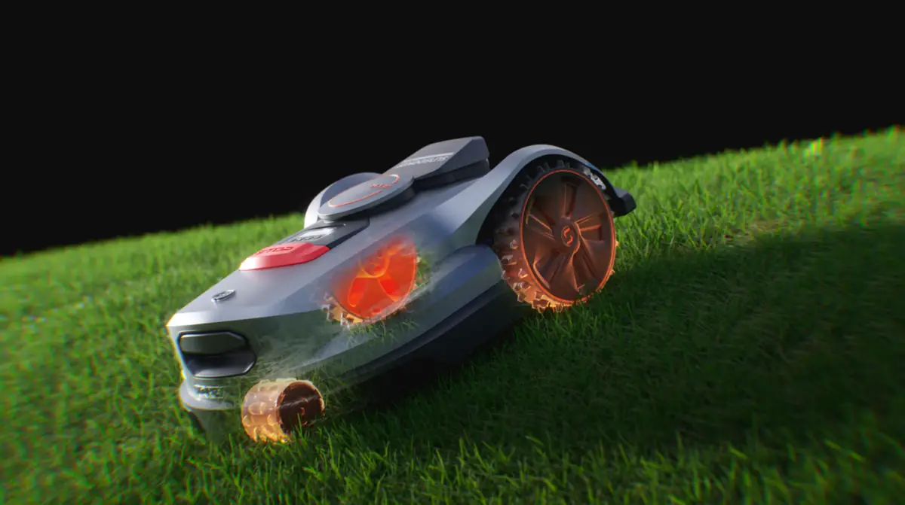
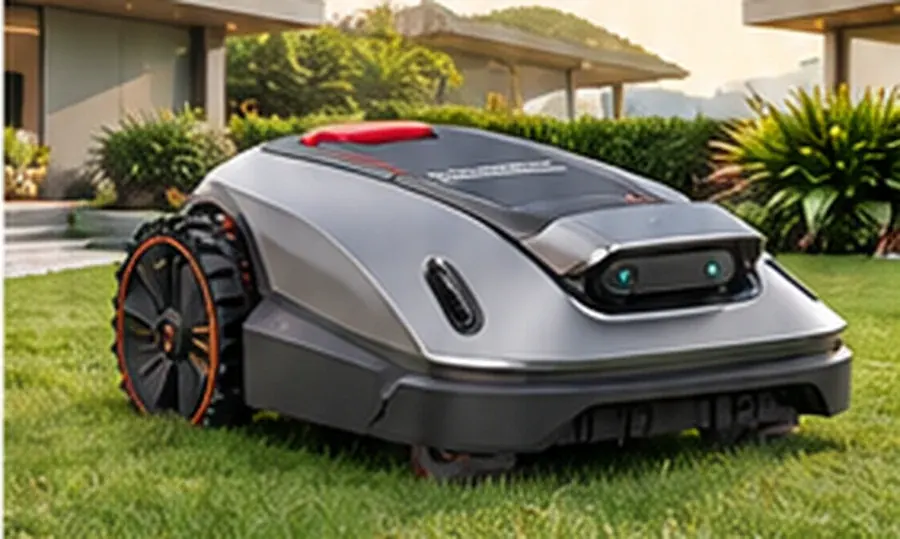
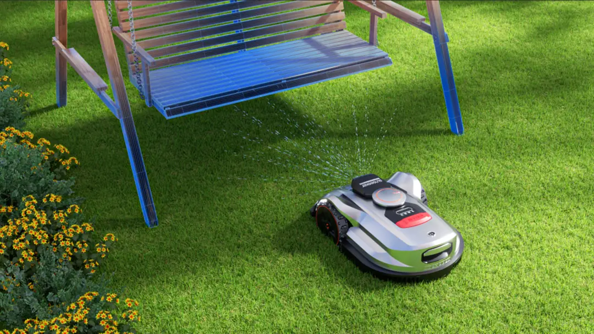
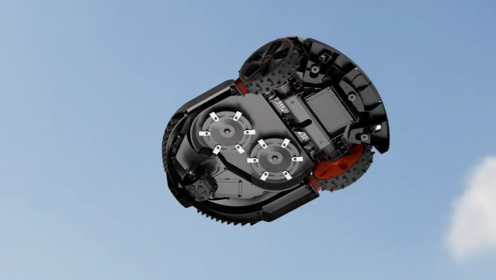
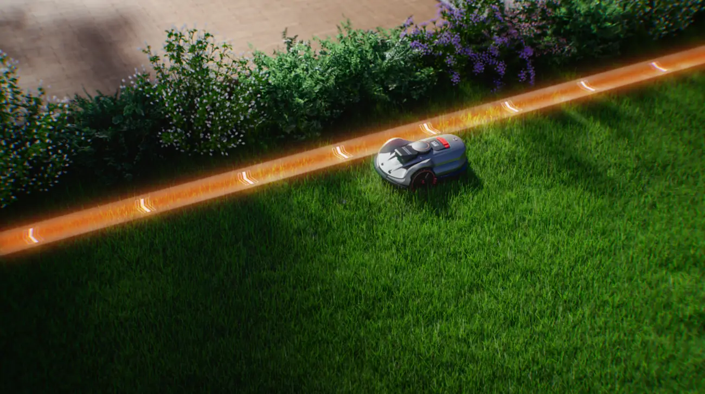
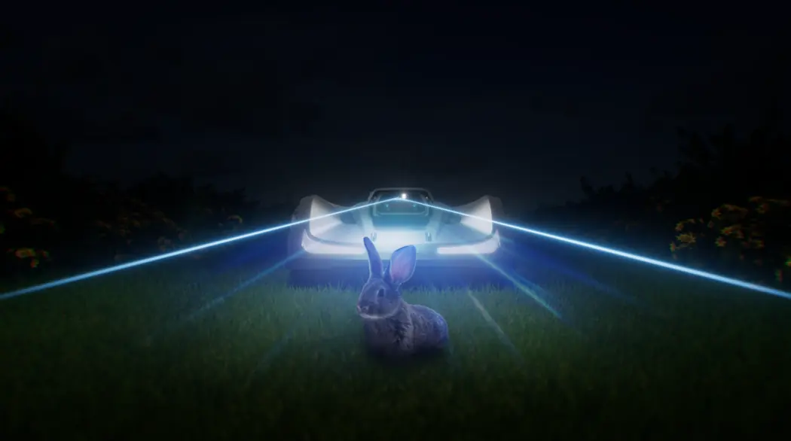
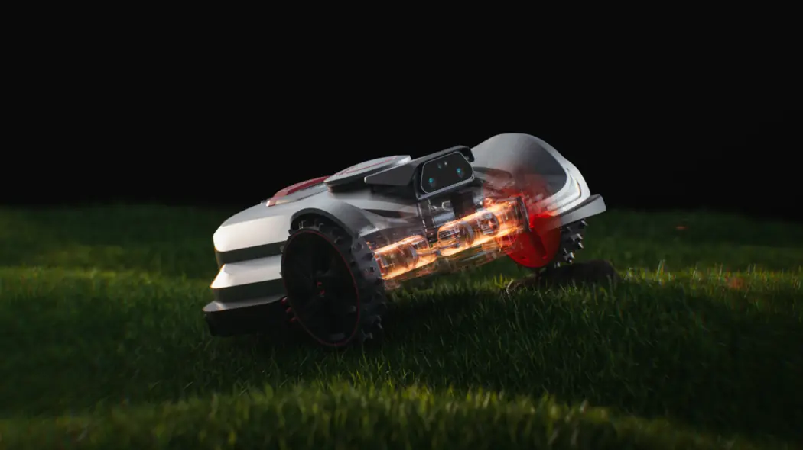

NEW / UP TO 0.5 ACRE
X5 Gen2
Right-sized AWD power for everyday lawns. A dedicated side cutting disc helps leave cleaner edges.
60% / 30° slopes1.2-in close-to-edge cutNo boundary wire
EXPLORE X5 GEN2 A+ →
Meet three next-generation AWD robotic mowers. A cleaner cut, smarter navigation, and more time to enjoy your lawn.
Three distinct solutions for different lawns. Built around the modular, visual-first layout of an Amazon Brand Store.

Right-sized AWD power for everyday lawns. A dedicated side cutting disc helps leave cleaner edges.

Large lawn. Tough terrain. Made simple.

Expansive lawns. More freedom. Smart area management.
X7 Gen2 visuals below are selected from your supplied X7 image archive. X7 Plus image is an illustrative design placeholder pending an approved product render.
Original selected product visuals connected directly to the claims they explain: traction, obstacle avoidance, and the cutting system.
Independent drive and suspension help tackle uneven lawns and slopes up to 70% / 35°.

Binocular vision and iToF help recognize everyday objects.

Floating dual discs adapt to the contours of the lawn.
Click through the supplied visuals, just as in the X5 Gen2 A+ interactive presentation.

RTK positioning and visual navigation help X7 Gen2 map the yard and maintain its mowing path across changing environments.
Systematic mowing across larger open areas, powered by a wide dual-disc cutting system.

Binocular cameras and iToF help the system identify obstacles in daylight and low light.

Independent suspension supports stability on bumps, slopes and changing turf.
| Specification | X5 Gen2 | X7 Gen2 | X7 Plus Gen2 |
|---|---|---|---|
| Recommended lawn coverage | Up to 0.5 acre | Up to 0.75 acre | Up to 1.5 acres |
| Drive | AWD | AWD | AWD |
| Max slope | 60% / 30° | 70% / 35° | 70% / 35° |
| Navigation | RTK + VSLAM 2.0 | RTK + VSLAM 2.0 | RTK + VSLAM 2.0 |
| Main cutting width | 8.7 in | 14 in | 14 in |
| Cutting system | Floating main disc + side trimmer | Dual floating discs | Dual floating discs |
| Distinctive benefit | 1.2-in close-to-edge trimming | Strong terrain performance | Wide-area management |
Specifications are based on the supplied product briefs. Maximum lawn area is not single-charge coverage. Actual performance varies by site and conditions.